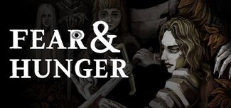

Casi tan antiguas como la ciudad de los dioses son las antiguas tumbas que funcionan como nexo entre múltiples planos diferentes de existencia. El reino occidental Rondon trató de utilizar los rumores de pesadilla sobre las tumbas y construyó una prisión de guerra sobre las antiguas tumbas, las mazmorras de Miedo y Hambre. Pero poco sabían que semejante oscuridad no podía ser contenida.
En 1590, la locura se extendió por las mazmorras como una plaga. Algunos incluso sospechaban que la plaga que asola el Reino de Rondón era la causa de todo esto. Y así, el capitán de las mazmorras de Miedo y Hambre, el capitán Rudimer, se propuso purificar las mazmorras de inmundicias y privaciones. Pero los suministros menguaban más rápido de lo imaginado, y puso pie en la ciudad subterránea de los cavernícolas e intercambió un extraño artefacto por comida y provisiones. Más tarde pareció perder la cabeza y corrió solo hacia las oscuras mazmorras, sin llevar nada más que una sábana y con sueños febriles de cuervos. Finalmente se entregó por completo a la oscuridad. Ahora vaga por los pasillos, purgándolos de todo lo que aún respira.
El capitán Rudimer estaba destinado a ser salvado por 4 personas del Reino de Rondon: Seril, hermano de Rudimer y un caballero enjuto de la guardia real de Rondon, a quien le vendría bien un poco de Elixir de la mente, el corpulento príncipe heredero Ludwig Buckman, la caballera Jeanne, y el pesado caballero Ser Seymor.
Cuando las cosas empezaron a sucumbir al caos en las mazmorras de Miedo y Hambre, el Reino de Rondón envió a Shakespeare de Hierro en busca de ayuda. En poco tiempo, él también perdió la cabeza. Ahora intenta proteger la zona hasta su último aliento de cualquiera que ponga un pie en la fortaleza. 
El Festival de Termina está supuestamente orquestado por los Dioses Antiguos, y Rher, el Dios de la Luna, es el que con más frecuencia se relaciona con su historia. A pesar de su prominencia, el verdadero significado de este festival escapa a la comprensión, presentándose como una tumultuosa batalla campal, una especie de batalla real en la que múltiples contendientes luchan por la victoria y, supuestamente, por un gran premio al final. Incluso los eruditos dedicados al estudio de la magia, como O'saa, se sienten confundidos por el enigma del festival, mientras que la gente común ignora en gran medida su existencia o sus implicaciones más profundas. Termina, sin embargo, está asociada a periodos de profundo caos y agitación. A lo largo de la historia, el Dios de la Luna y una deidad llamada Per'kele han sido acusados de instigar masacres e inspirar actos horrendos, arrojando una sombra de locura sobre su nombre. Sin embargo, más allá de estos relatos fragmentarios, el Festival de Termina y Rher permanece velado en el misterio para la población en general.
En realidad, Rher partió de este mundo hace muchos años, con Per'kele, su supuesto sirviente, utilizando los rastros de su esencia para mantener la ilusión de su presencia. Per'kele fue una vez un mortal que participó en una iteración pasada del Festival de Termina. Se desconoce si salió vencedor, pero afirma que «nació de verdad» tras la experiencia. La verdadera devoción de Per'kele está en otra parte: el Dios del Azufre. Utiliza el Festival de Termina como campo de reclutamiento para el Culto del Azufre, y los ganadores del Festival renacen en los pozos de azufre.
En 1942, el escenario de Fear & Hunger 2: Termina, la ciudad de Prehevil se convierte en el escenario de tres Festivales de Termina consecutivos. Cada uno de ellos se desarrolla en rápida sucesión: el festival inicial enfrenta a los civiles de Prehevil entre sí; la segunda entrega ve a los soldados de Bremen y a las fuerzas enviadas por el Kaiser, que llegan en las secuelas de la Segunda Gran Guerra; y, por último, el tercer festival marca el comienzo del juego en sí, con 14 concursantes que llegan a Prehevil en tren, cada uno impulsado por sus propias motivaciones únicas. Se da a entender que fuerzas sobrenaturales impiden a los concursantes escapar de Prehevil, por lo que los festivales son inevitables.
Según la información fragmentaria de que disponen los jugadores a lo largo del juego, antes del primer festival, los residentes de Prehevil y los asentamientos cercanos empezaron a experimentar sueños recurrentes con el rostro de Per'kele tras una noche de luna llena. La propia ciudad parece haberse visto muy afectada por los recientes acontecimientos, ya que los participantes del tercer festival procedentes de Prehevil rememoran los días pasados de la ciudad, describiéndola como una vez estuvo en condiciones significativamente mejores, con estructuras notablemente menos destartaladas y deterioradas. Las casas parecen congeladas en el tiempo, como si la vida normal se detuviera en un abrir y cerrar de ojos, y lo que allí ocurriera tuviera lugar de forma abrupta y sin previo aviso. Los pocos aldeanos supervivientes, llevados al borde de la locura, muestran síntomas de Moonscorch, la mayoría de ellos participando en ataques frenéticos contra cualquiera que se cruce en su camino; la presencia de múltiples ciudadanos vivos podría ser un indicio de que el festival inicial no produjo un ganador.
Poco después de la conclusión del primer festival, las fuerzas de Bremen que ocupaban Prehevil también se vieron envueltas en el juego mortal, y sólo se encuentra un soldado superviviente. Su diálogo insinúa el inminente final de un límite de tres días para su festival, lo que indica que el tercer festival comenzó antes de la conclusión del segundo.
El tercer festival es el acontecimiento central de la trama de Fear & Hunger 2: Termina, que tiene lugar dentro del recorrido específico del jugador después de haber elegido a su protagonista entre los concursantes que acaban de llegar a Prehevil en tren. Al igual que sus predecesores, el tercer festival también se desarrolla en un ajustado plazo de 3 días y exige que sólo un concursante emerja como el superviviente definitivo. Sin embargo, no se ha publicado ninguna información oficial sobre el resultado, por lo que el posible ganador, si es que lo hay, está rodeado de misterio. Además, los acontecimientos relacionados con el Proyecto Lógica podrían interrumpir el desarrollo del festival.